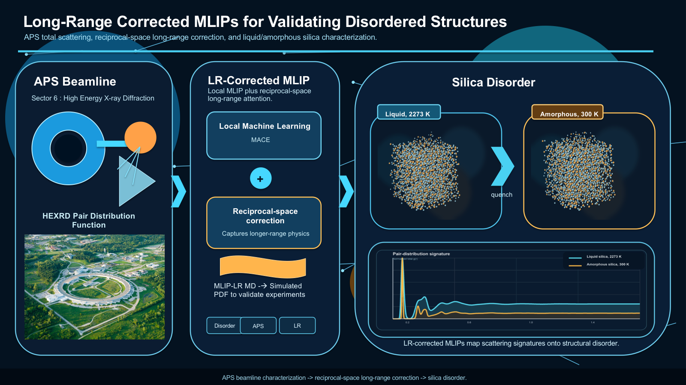

Beamlines · MLIP physics · materials translation
Experiment-grounded atomistic ML for mechanistic insights and materials discovery.
We build scalable atomistic models, test their predictions against beamline measurements, and use molecular simulation to guide biomedical materials discovery.

Our rubric
Algorithmic cores for real-world experimental practice.
Experimental agreement is a test, not an assumption. We compare simulated observables with measured data to identify useful predictions and model limitations, then use those findings to guide model refinement and application-specific studies.
Build scalable MLIP workflows and corrections for structures where locality alone is insufficient.
Compare simulations with beamline measurements from disordered oxides and layered chalcogenides.
Work with UB School of Dental Medicine collaborators to explore candidate materials and their atomistic mechanisms.
Research in Practice
Published · 2026
What diffraction reveals about MLIP limits
Neutron and x-ray diffraction assess what long-range machine learning potentials capture about medium-range order in silica glass.
Read the published study →ChemRxiv preprint · 2026
Boundary-driven transformations in layered In2Se3
Long-range machine-learning molecular dynamics examines how boundaries influence phase transformations in a layered chalcogenide.
Explore the preprint →ChemRxiv preprint · 2026
Active learning for BPA-free dental resin candidates
Active learning prioritizes candidates for molecular simulation, exploring trade-offs in stiffness, curing shrinkage, and network structure.
Explore the preprint →For prospective students: Students develop skills in scientific machine learning, GPU computing, molecular simulation, and collaboration with experimentalists. Learn about joining the lab →